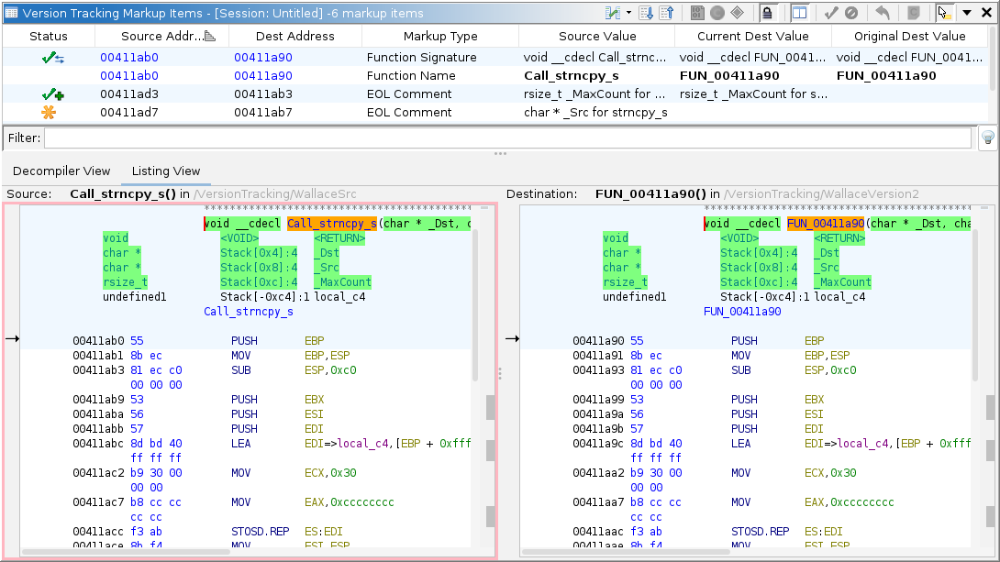
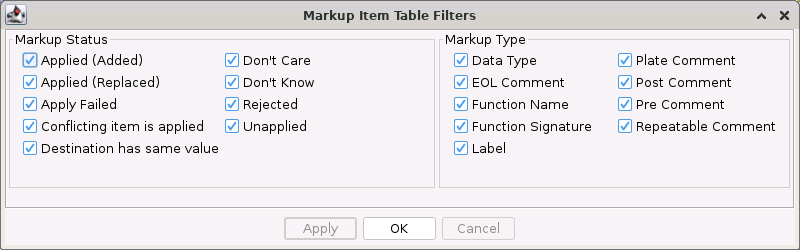
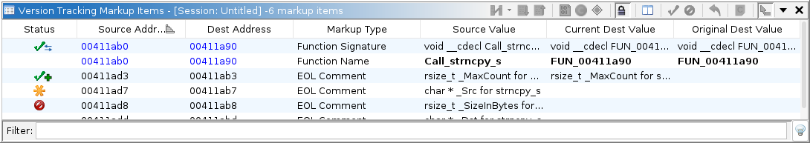
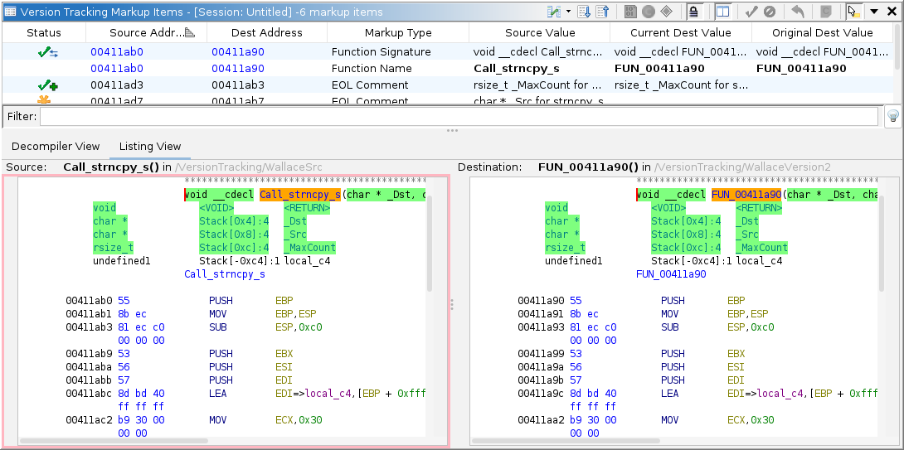

Version Tracking Markup Items Table
Marking up a program means adding information to a program to help understand it. A markup item is some type of information that has been specified in the source program that you now wish to move to the equivalent function or data within the destination program. The Version Tracking Markup Items table shows a list of markup items for the currently selected match in the Version Tracking Matches table.
Below the Markup Items table you can also view two listings, one for the source program and the other for the destination program. The dual listings provide an alternate way, besides the table, to view and manipulate the markup items. This also provides the capability to drag a markup item from the source program and apply it, where you want, by dropping it in the destination program. The dual listing will be described below in more detail.
|  |
Once you have decided that you believe a function or data match is correct, the Markup Items table allows you to decide whether you want to apply or ignore individual markup items. Applying a markup item changes the information in the destination program using information from the source program. The Markup Items table lets you decide what to apply from the source program to the destination program and how to apply it.
Markup Items Table Columns
You can add columns to and remove columns from the Markup Items table by right clicking on any column title in the table and choosing the Add/Remove Columns... button from the popup menu. The following table describes the default columns for the Markup Items table.
Column Name Description Status The current status of this markup item. Is this item unapplied, applied, rejected, etc. Each possible markup item status is described below in more detail. Source Address This column shows the address where the markup item's value is coming from in the source program. Dest Address This column shows the address where the markup item will be applied or has been applied in the destination program. No Address is displayed if the address correlator couldn't determine a destination address to associate with the source address and the user hasn't manually specified the destination address. Displacement This column shows the relative displacement of the destination address as compared to the source address. Positive numbers indicate additions in the destination and negative numbers indicate subtractions. Markup Type This column identifies the type of markup item for this row. Each possible markup type is described below in more detail. Source Value This column shows the value for this markup type at the associated address in the source program. Current Dest Value This column shows the current value for this markup type at the associated address in the destination program. Original Dest Value This column shows what the value for this markup type was originally (before being applied) at the associated address in the destination program. If the item hasn't been applied yet, this will be the current destination value. Markup Type
There are many different types of markup that can be applied from the source to the destination. The table below lists the various types of markup items.
Some types of markup items can conflict with others. This simply means that once any markup is applied, then any of its conflicting markup types cannot be applied for that same Match result. The conflicting markup item that can no longer be applied is given a status of Conflict.
Markup Type Description Function Name The name labeling the function. Any non-default name in the source program can replace the function name in the destination program. A default function name has the "FUN_" prefix. You can choose to only replace the destination function name when it is a default name or you can always replace it whether a default or not. Function Signature The signature of the function. The items included in the function signature are: the return type, the number of parameters and each parameter's associated data type, name, and comment and whether the function has variable arguments (varargs). There are several other markup apply options that are included with the function signature markup: the calling convention, the inline flag, the no return flag, and the call fixup for the function. These each have their own options for whether they get applied with the function signature. Return Type and Parameter DataTypes
When data types are applied the default data type, which is a single undefined byte, will not replace any other data types. An undefined data type of a particular size will not replace a defined data type. A defined data type can replace any other data type, but will not if the option is set to "Replace Undefined Data Types Only" and the destination is a defined data type.Parameter Names
A default parameter name begins with "param_". Default parameter names in the source program will not replace a defined parameter name in the destination program.
If you choose to do a "Priority Replace" for the parameter names, whether or not the name is replaced depends on their source types. The options let you choose whether User Defined names or Imported names are higher priority. You can also specify whether the source name should replace the destination whenever their source types are the same.Label The labels on an instruction or defined data can replace or be added to those in the destination program at the associated address. If replacing the destination labels you can choose to only replace if the destination label is a default or replace all destination labels. EOL Comment The end of line comment from the source program can be added to an existing comment in the destination program or can simply replace the destination comment. Plate Comment The plate comment from the source program can be added to an existing comment in the destination program or can simply replace the destination comment. Pre Comment The pre-comment from the source program can be added to an existing comment in the destination program or can simply replace the destination comment. Post Comment The post comment from the source program can be added to an existing comment in the destination program or can simply replace the destination comment. Repeatable Comment The repeatable comment from the source program can be added to an existing comment in the destination program or can simply replace the destination comment. Data Type The data type for an address with defined data in the source program can replace the data type of an associated address of data in the destination program. Markup Item Status
Each markup item has a status (indicated in the Status column). The table below lists each markup item status along with its associated icon in the table, background color in the code listing, and a description of that status.
Markup Item Actions
There are actions that can be performed on markup items in the table and in the dual listing. The table below lists these actions.
Action Icon Description Apply (Use Options; Force If Necessary) 
This action applies the selected markup items using the current apply match option for each markup type. For each selected markup item this action will force (or try to cause) the option to be applied. For example, if the option for a selected markup type is set to "Do Not Apply", this action would cause an add or replace to be performed depending on the item. Apply (Add As Primary) 
This action applies the source value for each selected markup item by adding it to the destination value. If possible the source markup item becomes the primary one. Apply (Add) This action applies the source value for each selected markup item by adding it to the destination value. The destination markup item remains the primary one. Apply (Replace Default Only) 
This action applies the source value for each selected markup item by replacing the destination value with the source value only if the destination value is a default value. Apply (Replace First Only) This action applies the source value for each selected markup item by replacing the destination value with the source value if the only defined data being replaced is the Data item at the destination address. If there is more than one defined data in the destination program that would be replaced by the source data type, then no replace will occur. Apply (Replace) This action applies the source value for each selected markup item by replacing the destination value with the source value. For data this will replace all defined data that is currently in the way of the source data type being created.
Important: For Data markup that is replaced, the Reset Mark-up action will only be able to restore the single Data item that was originally at the Destination Address. Any other Data items that were replaced by this action will not be restored by Reset Mark-up.
Don't Care 
This action sets the status of this markup item to Don't Care. This indicates that we don't care about this markup item and it shouldn't be applied when the match is applied. Don't Know 
This action sets the status of this markup item to Don't Know. This indicates that we don't know if this markup item is correct or don't know if it should be applied when the match is applied. Reject 
This action sets the status of this markup item to rejected. Once a markup item is rejected, it will be ignored when applying the match for this item. Edit Destination Address 
This action provides an edit address dialog that allows you to specify a destination address for any markup item that doesn't already have an address as indicated by "No Address". It also allows you to change the destination address if the one specified for the markup item is incorrect. In some circumstances you can't edit the destination address and an information dialog indicating why it's not editable will be displayed instead. Reset 
This action resets the markup item back to its original unapplied state and restores the markup in the destination program back to its original state if necessary. Markup Items Filters
Below the Markup Items table is a text field labeled "Filter". This text field is the primary text filter. Typing text into the filter will remove all markup item rows that don't have that text in at least one of the displayed fields.
The
button to the right of the primary text filter will show the ancillary filters that are available. You can apply an ancillary filter by removing the check mark from its box and pressing the Apply or OK button. Once an ancillary filter is applied the ancillary filters icon will change to
. Further, the icon may occasionally flash as a reminder that there is a filter applied. The following image shows the available ancillary filters.
 The table below lists and describes the groups of available filters.
Filter Group Description Markup Status Markup items with any status that is checked will appear in the markup item table. Any item with a status that is not checked will be filtered out and not displayed in the table. Markup Type Markup items of any type that is checked will appear in the markup item table. Any item of a type that is not checked will be filtered out and not displayed in the table.
The window title above the Markup Items table displays an indicator that a filter is set on the markup items table and not all items are shown. For example, the title might contain "2 markup items (of 8)" indicating 6 items are hidden or filtered out.
Comparison Views
There can be multiple types of comparison views which are provided by various plugins. Illustrated below is the Listing View. This view provides a side by side comparison of two functions (source and destination) that make up the currently selected function match. For a selected data match, the Listing View will provide side by side comparison of the data.
Dual Listing Window
The dual listing appears below the Markup Items table when the Listing View tab is selected. It shows one listing for the source program and another listing for the destination program. When a function match is selected, each listing displays only the addresses that are part of the function. When a data match is selected, the source listing will display the addresses that make up that data and the destination listing will display the addresses that would be affected if it were applied.
The two listings can be positioned with one above the other or they can be side by side. You can also hide the dual listings altogether. The colored background areas in each listing indicate anywhere that one of the markup items exists for the current match. If you right click on a markup item in either of the listings, a popup menu will appear containing actions, such as apply, reject, reset, etc., for that markup item. You can also drag and drop a markup item from the source listing to an address in the destination listing causing it to be applied at that address.
The following shows the dual listings below the Markup Items table with the source listing positioned above the destination listing.
Dual Listing Actions
The Toggle Dual Listing Visibility
toolbar action allows you to control whether or not the dual listing is displayed. When it is toggled on (appearing pressed in) the dual listings are shown below the Markup Items table.
The following shows the Version Tracking Markup Items window with the Dual Listings visibility toggled off.
 From the toolbar menu
there are selectable options that apply to the dual listing.
- Show Listing Format Header
When this item has a checkmark next to it, the header is displayed above the source listing and allows the listing fields to be adjusted. More information about using the header to change the listing format can be found in the help for the Browser Field Formatter.- Show Listings Side By Side
When this item has a checkmark next to it, the destination listing will be positioned to the right of the source listing. Otherwise the destination listing is positioned below the source listing.- Synchronize Scrolling
When this item has a checkmark next to it, thebutton will show in the toolbar and the dual listing will synchronize scrolling of the left and right function in their views. Scrolling or moving the cursor in one side will cause the location in the other side to also scroll or move if a matching location can be determined.
Otherwise when this item has no checkmark next to it, thebutton will show in the toolbar and the left and right sides of the dual listing will scroll independent of the other side.
The following shows the format header being displayed for the dual listings.
The following shows the dual listings being displayed side by side.

Background Colors in the Listings
The background colors in the listings are used to identify where you have markup items. The colors are also used to indicate the status of each markup item. For example a green background indicates markup items that have already been applied, orange indicates markup that is still unapplied, blue indicates a markup item where the source and destination already match, grey indicates a markup item you have chosen to ignore, pink indicates a markup item you have rejected, and red indicates a markup item where an attempt to apply the item to the destination failed. Each Markup Item Status and its associated color is defined above in a Markup Item Status table.
Drag and Drop
You can use drag and drop in the dual listing window to apply markup items. This provides a quick visual way to apply a particular markup item to a specific spot in the destination listing. If the address correlator has associated the incorrect destination address with the markup item's source address or if the correlator couldn't determine a destination address, you can quickly apply an item by dragging it to the correct address in the destination listing. Manually editing the destination address and then applying the item is more time consuming, but can be done instead of using drag and drop. Drag and drop of markup items isn't available from the separate Source and Destination Tools because dragging begins selection of code there.
Drag and drop is available for all markup items in the dual listing where it makes sense to apply a markup item. For example, you can't drag an already applied markup item. To apply an item, click on the markup item in the source listing you want to apply and drag it to the code in the destination listing where you want it applied. When you start dragging, the cursor will change to indicate that dragging is allowed for the item. Once you drop the item, the destination listing will update to show the markup where it was dropped, the background color will change, and the markup item's status should change in the table.